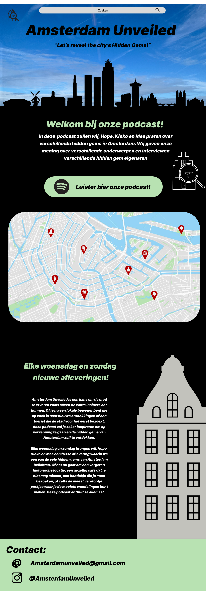

Project context
In de podcast Amsterdam Unveiled geven wij (Hope, Kioko en Mea) onze eerlijke mening over verschillende hidden gems in Amsterdam. We beoordelen locaties op sfeer, eten, bereikbaarheid en studiemogelijkheden.
De podcast richt zich op studenten en stadsverkenners die op zoek zijn naar nieuwe plekken om te ontdekken, studeren of werken.
Doel
Een eerlijke en informatieve podcast over verborgen plekken in de stad.
Doelgroep
Studenten en jonge stadsverkenners.
Rol
Content design + conceptontwikkeling + productie.
Podcast aflevering
Beluister onze aflevering hieronder:
Visual

Resultaat
Een informatieve en toegankelijke podcast die studenten helpt nieuwe plekken in Amsterdam te ontdekken.